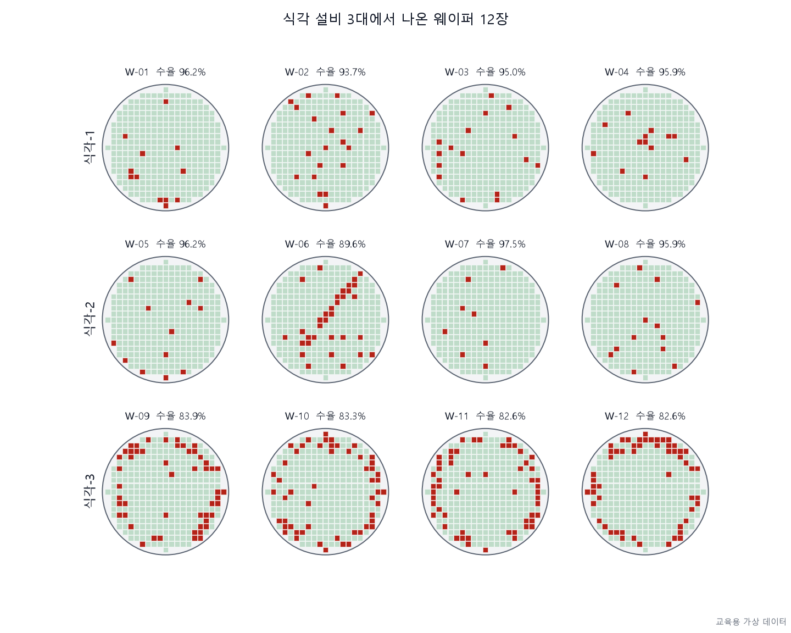

semiconductor_kit 폴더 구조는 그대로 둔다. 노트북과 Orange 파일이 폴더 위치를 기준으로 데이터를 찾는다.
7차시

설비·공정 비교와 수율·불량 분석
오늘의 질문: "설비마다 차이가 있어 보이는데, 숫자로 계산해도 정말 그럴까?"
오늘의 미션 — 입사 일곱째 날, 웨이퍼 300장의 검사 기록을 받았다. 어느 설비의 합격률(이 기록에서 수율 대신 쓰는 값)이 가장 낮은지, 가장 많은 불량 유형은 무엇인지 보고하자. (신입 데이터 담당자의 10일 이야기와 공장·설비·데이터는 모두 교육용 가상이다.)
학습 목표
- 수율·불량률이 "무엇 중에 무엇의 비율"인지 설명하고, True/False 열의 평균으로 비율을 구할 수 있다.
groupby로 설비별 합격률을 계산해 비교할 수 있다.- 불량 유형을 많은 순으로 세고 막대로 그릴 수 있다.
- Orange3 Pivot Table로 설비별 합격·불합격 수를 세고, 눈에 띄는 설비를 "원인"이 아니라 "원인 후보"로 말할 수 있다.
선수 지식: 6차시 — 막대그래프(value_counts() + plt.bar), Orange Scatter Plot·Box Plot, 웨이퍼 맵 / 4차시 — 조건 검색, sort_values / 3차시 — True/False, Orange Select Rows
오늘 수업 구성
| PART | 하는 일 |
|---|---|
| PART 1 · 파이썬 | 쪽지시험 기록으로 정답률을 구하고 반별로 묶어 비교한 뒤, 같은 코드로 웨이퍼 300장 기록을 본다 |
| PART 2 · Orange3 | 식각 설비 3대의 웨이퍼 12장으로 Pivot Table(피벗 표)과 웨이퍼 맵을 익히고, 같은 위젯으로 공장 기록을 본다 |
| PART 3 · 실습지 | 노트북 문제 3개(오늘의 미션) + Orange 1문제 + 해석 문장 1개 |
왜 이걸 배워야 할까?
전체 합격률 하나만 보면 "어디서" 불량이 많이 나는지 숨는다. 오늘 쪽지시험 기록도 전체 정답률은 75.0%지만, 반별로 나누면 87.5%인 반과 62.5%인 반이 있다.
비유 — 피자 가게의 오븐 세 대
가게 전체로 탄 피자가 몇 판인지만 세면 어느 오븐이 문제인지 모른다. 오븐마다 나눠 세어 보면 탄 판이 한 오븐에 몰렸는지 보인다.
그래도 그 오븐이 곧 이유라고 단정하지는 않는다 — 그 오븐에 유난히 두꺼운 도우가 몰렸을 수도 있다. 그래서 "먼저 살펴볼 곳", 즉 원인 후보라고 부른다.
지난 시간 복습
Q1. Orange Scatter Plot에서 x를
다이_X, y를 다이_Y, 색을 합격여부로 놓으면 무엇이 보였을까?둥근 웨이퍼 모양의 웨이퍼 맵이 보이고, 불합격 다이가 어디에 몰렸는지(6차시 웨이퍼는 가장자리) 알 수 있었다. 오늘은 웨이퍼 여러 장을 설비별로 나눠 본다.
Q2. Orange Box Plot에서 한 설비의 상자가 다른 설비보다 길다면 무슨 뜻일까?
그 설비의 값이 더 넓게 퍼져 있다(들쭉날쭉하다)는 뜻이다. 상자의 위치는 값의 크기, 길이는 퍼짐이다. 오늘 PART 2에서 한 번 더 쓴다.
PART 1 파이썬 — 비율 구하고 묶어서 비교하기
실습 파일 받기와 노트북 열기
1
7차시 키트 week07_kit.zip을 내려받아 압축을 푼다(전체 차시 키트: student_kit.zip). 압축을 푼
2
Jupyter를 켠다. 방법은 설치 안내의 STEP 05 "노트북 열어 보기"에 있다(
semiconductor_kit 폴더에서 명령 프롬프트를 열고 python -m notebook 실행).3
notebooks → student → week07_student.ipynb를 연다. 맨 위 "막혔을 때" 셀을 먼저 읽는다.개념은 쪽지시험 기록(week07_easy_quiz_results.csv, 24행 6열, 생활 예제용 가상 데이터)으로 익힌다. 세 반에서 두 명씩, 6명이 4문항씩 풀었다. 한 행 = 학생 1명이 푼 문항 1개다.
| 열 | 뜻 |
|---|---|
반, 이름, 문제번호 | 어느 반의 누가 몇 번 문항(1~4)을 풀었나 |
풀이시간_sec | 그 문항을 푸는 데 걸린 초. _sec = second(초) |
오답유형 | 틀렸을 때 왜 틀렸는지(계산 실수·문제 잘못 읽음·개념 부족). 맞았으면 빈칸 |
정답여부 | 채점 결과. 1 = 정답, -1 = 오답(공장 기록의 합격여부와 같은 표기) |
수율과 정답률 — 무엇 중에 무엇의 비율일까
수율은 만든 것 중 합격한 것의 비율이다. 피자 조각 100개를 만들어 92개를 팔 수 있으면 수율 92%, 나머지 8%가 불량률이다. 쪽지시험이라면 "푼 문항 중 맞힌 문항의 비율", 곧 정답률이 같은 계산이다. 비율을 말할 때는 늘 "무엇 중에"(분모)를 먼저 정한다.
Python — 쪽지시험 기록 읽기 (노트북 1단계)
import pandas as pd
quiz = pd.read_csv("../../data/weekly/week07/week07_easy_quiz_results.csv", encoding="utf-8-sig")
print(quiz.shape)
quiz.head()
실행 결과
(24, 6)
반 이름 문제번호 풀이시간_sec 오답유형 정답여부
0 A반 지민 1 45 NaN 1
1 A반 지민 2 60 NaN 1
2 A반 지민 3 52 NaN 1
3 A반 지민 4 70 NaN 1
4 A반 하은 1 50 NaN 1
오답유형 칸의 NaN은 빈칸이다(5차시). 맞힌 문항이라 오답 유형이 없다.
비교해서 새 열 만들기
quiz["정답여부"] == 1은 행마다 "1과 같은가?"를 물어 True/False를 만든다(3차시 비교). 그 결과를 새 열 정답에 저장한다.
True는 1, False는 0으로 계산되므로 sum()은 맞힌 문항 수, mean() * 100은 정답률(%)이 된다.
Python — 정답 열 만들고 정답률 구하기 (노트북 1단계)
quiz["정답"] = quiz["정답여부"] == 1
print(quiz["정답"].sum())
print(quiz["정답"].mean() * 100)
실행 결과
18 75.0
24문항 중 18문항을 맞혀 정답률 75.0%다. 정답여부(1/-1)를 그대로 평균 내면 1과 -1이 서로 지워져 0.5가 나온다 — 정답률이 아니다. 그래서 True/False 열을 먼저 만든다.
찾아보기
AI 답은 틀릴 수 있으니 확인 포인트와 비교하세요. 개인정보·실제 회사 데이터는 넣지 마세요.
검색어 반도체 수율 뜻
ChatGPT에 물어보기 — 복사해서 붙여 넣기
반도체를 처음 배우는 사람에게 반도체 공장에서 말하는 '수율(yield)'이 무엇인지 피자 가게에서 구운 피자 조각에 비유해서 3문장으로 설명해줘. 수율이 왜 공장에서 중요한 숫자인지도 알려줘.좋은 답이라면 "웨이퍼 위에 만든 다이(칩이 될 작은 네모) 중 검사를 통과한 것의 비율"이라는 뜻과, "수율이 낮으면 같은 재료와 공정으로 팔 수 있는 칩이 줄어 비용이 커진다"는 내용이 들어 있다.
수율을 다이 단위로 셀지 웨이퍼 단위로 셀지는 회사·상황마다 다르다. 오늘 공장 기록은 웨이퍼 1장 = 검사 1건으로 단순화했다.
groupby — 반별로 묶어서 비교하기
groupby("반")은 같은 반끼리 행을 묶고, 뒤의 ["정답"].mean()은 묶음마다 정답 열의 평균을 낸다. 피자 가게에서 판을 오븐별로 모아 오븐마다 탄 비율을 따로 세는 것과 같다.
| 반 | 푼 문항 | 맞힌 문항 | 정답률 |
|---|---|---|---|
| A반 | 8 | 7 | 7 ÷ 8 × 100 = 87.5 |
| B반 | 8 | 5 | 5 ÷ 8 × 100 = 62.5 |
| C반 | 8 | 6 | 6 ÷ 8 × 100 = 75.0 |
groupby가 반마다 하는 계산(쪽지시험 기록의 실제 값). 아래 코드 한 줄이 이 표를 만든다.
Python — 반별 정답률 구하고 줄 세우기 (노트북 2단계)
class_rate = quiz.groupby("반")["정답"].mean() * 100
print(class_rate.round(1))
print(class_rate.sort_values())
실행 결과
반 A반 87.5 B반 62.5 C반 75.0 Name: 정답, dtype: float64 반 B반 62.5 C반 75.0 A반 87.5 Name: 정답, dtype: float64
- 맨 위
반은 묶은 열 이름, 맨 아래Name: 정답은 평균 낸 열 이름이다.dtype: float64는 "소수가 있는 숫자"라는 뜻이라 보지 않아도 된다. .round(1)은 소수 첫째 자리까지 반올림한다.sort_values()(4차시)는 작은 값부터 줄 세운다 — 가장 낮은 반이 맨 위에 온다.- 전체 75.0%였지만 B반은 62.5%다. 다만 한 반에 두 명뿐이라, 학생 한 명에 따라 반 정답률이 크게 흔들린다. 건수가 적은 묶음의 비율은 조심해서 읽는다.
오답 유형 줄 세우기 — 무엇부터 고칠까
틀린 문항(-1)만 고른 뒤(4차시 조건 검색) 오답유형을 센다. 많은 순으로 세워 막대로 그리면 "무엇부터 고칠지"가 보인다. 막대는 6차시의 4줄 틀 그대로다.
Python — 오답 유형 세기 (노트북 3단계)
wrong_counts = quiz[quiz["정답여부"] == -1]["오답유형"].value_counts()
print(wrong_counts)
실행 결과
오답유형 계산 실수 3 문제 잘못 읽음 2 개념 부족 1 Name: count, dtype: int64
Python — 오답 유형 막대그래프 (노트북 3단계)
import matplotlib.pyplot as plt
plt.rcParams["font.family"] = "Malgun Gothic"
plt.rcParams["axes.unicode_minus"] = False
plt.bar(wrong_counts.index, wrong_counts)
plt.xlabel("오답유형")
plt.ylabel("오답 수")
plt.show()막대 세 개가 계산 실수(3) · 문제 잘못 읽음(2) · 개념 부족(1) 순으로 선다. value_counts()가 이미 많은 순으로 세어 주므로 막대도 그 순서다. 오답 6개 중 절반이 계산 실수라, 계산 실수부터 줄이면 효과가 크다.
찾아보기
AI 답은 틀릴 수 있으니 확인 포인트와 비교하세요. 개인정보·실제 회사 데이터는 넣지 마세요.
검색어 파레토 차트
ChatGPT에 물어보기 — 복사해서 붙여 넣기
데이터 분석을 처음 배우는 사람에게 파레토 차트가 무엇인지 쪽지시험 오답 유형 예시로 3문장 안에 설명해줘. 공장에서 불량 유형을 많은 순으로 줄 세우는 이유도 알려줘.좋은 답이라면 "종류별 개수를 많은 순으로 막대로 세우고, 누적 비율 선을 함께 그리기도 한다", "많은 몇 가지부터 고치면 전체를 가장 크게 줄일 수 있다"는 내용이 들어 있다.
"상위 20%가 80%를 차지한다"는 말은 경험적 표현일 뿐 늘 정확히 맞는 규칙은 아니다. 오늘은 누적 선 없이 막대만 그린다.
반도체 데이터로 확인하기
공장 기록 week07_equipment_yield.csv(300행 11열, 교육용 가상 데이터)는 로트 75개 × 웨이퍼 4장 = 웨이퍼 300장의 기록이다(실제 로트는 보통 25장 안팎, 이 기록은 연습용으로 4장). 한 행 = 웨이퍼 1장이다.
위 코드에서 표 이름이 quiz → df로, 열 이름만 바뀐다.
공정 지도 위치: ② 산화 ~ ⑤ 증착/이온주입 + 세정 설비의 기록과, ⑦ EDS(전기 검사)까지 마친 뒤의 최종 합격 여부다(1차시 공정 지도 그림은 PART 2에서 다시 본다).
| 열 | 공장에서의 뜻 |
|---|---|
로트번호, 웨이퍼번호 | 웨이퍼 묶음 번호와 묶음 안에서 몇 번째 웨이퍼인지(1~4) |
설비번호, 공정명 | 어느 기계(EQ-01~EQ-04)에서 어떤 작업(산화·포토·식각·증착·세정)을 했나. 설비 4대가 여러 공정 기록을 함께 남겼다(교육용 가상 기록) |
작업조 | 그 시간에 일한 교대 근무팀(A·B·C조) |
온도_C, 압력_Pa, 진공도_mTorr, 처리시간_sec | 설비 안 온도(섭씨 도), 압력(파스칼), 진공도(공기를 얼마나 뺐나, 낮을수록 진공에 가깝다), 작업에 걸린 초. 압력 값의 절대 크기는 해석하지 않는다(교육용 가상 값, 데이터 설명서 참고) |
불량유형 | 불합격일 때 기록된 불량의 종류(두께 불량·파티클 등). 공정 중간의 두께 측정·표면 검사와 마지막 전기 검사(⑦ EDS)에서 찾은 것을 한 열에 모아 둔 교육용 설정이다. 합격이면 빈칸. 같은 행의 공정명 작업에서 생겼다는 뜻은 아니다 |
합격여부 | 그 웨이퍼의 최종 판정(공정 중간 검사와 전기 검사 결과를 모은 교육용 설정), 행마다. 1 = 합격, -1 = 불합격 |
실제 공장은 웨이퍼 위 다이 단위로 수율을 세는 경우가 많다. 이 기록은 웨이퍼 1장 = 검사 1건으로 단순화해, 웨이퍼를 센 비율(설비별·로트별 모두)을 합격률이라 부르고 수율 대신 쓴다. 다이를 센 비율(PART 2 워밍업)만 수율이라 부른다.
이 기록의 단순화 실제 웨이퍼는 여러 공정을 모두(여러 번) 거친다. 이 기록은 로트마다 설비 하나·공정 하나만 적어 둔 교육용 단순화다. 그래서 공정 차이와 설비 차이(그리고 로트 차이)를 숫자로 떼어 볼 수 없다 — 무엇을 찾든 "원인 후보"까지만 말한다.
확인 1 — 작업조별 불합격률은 다를까
쪽지시험의 정답 열과 같은 모양으로, 이번에는 == -1(합격여부에서 -1 = 불합격)로 불합격 열을 만들어 작업조별로 묶는다. True/False 열의 평균이니 불합격률(%)이 나온다.
해보기 노트북 4단계에는
groupby(____) 빈칸이 하나 있다. 2단계에서 "반"이 있던 자리에 작업조 열 이름을 넣는다. 아래 결과와 같게 나오면 맞다.Python — 공장 기록 읽고 작업조별 불합격률 구하기 (노트북 4단계)
df = pd.read_csv("../../data/weekly/week07/week07_equipment_yield.csv", encoding="utf-8-sig")
print(df.shape)
df["불합격"] = df["합격여부"] == -1
# TODO: 작업조별로 묶도록 열 이름을 채우세요(2단계 "반"이 있던 자리).
shift_fail = df.groupby(____)["불합격"].mean() * 100
print(shift_fail.round(1))"작업조" — 열 이름이라 따옴표로 감싼다. 따옴표 없이 쓰면 NameError: name '작업조' is not defined가 난다.
실행 결과
(300, 11) 작업조 A조 9.8 B조 15.5 C조 9.7 Name: 불합격, dtype: float64
공장 말로 읽기 — B조가 일한 웨이퍼의 불합격률이 15.5%로, A조·C조(약 10%)보다 높다. 그렇다고 "B조 때문"이라고 단정할 수는 없다. B조가 일한 시간에 어느 설비·어떤 로트가 몰렸는지에 따라서도 이 숫자는 달라진다(실제로 B조는 EQ-04 기록을 36장 맡았다). 지금 말할 수 있는 것은 "B조 시간대는 원인 후보로 더 살펴볼 곳"까지다.
찾아보기
AI 답은 틀릴 수 있으니 확인 포인트와 비교하세요. 개인정보·실제 회사 데이터는 넣지 마세요.
검색어 비교만으로 원인 단정 못하는 이유
ChatGPT에 물어보기 — 복사해서 붙여 넣기
공장에서 설비별 불합격률을 비교했더니 한 설비가 가장 높았어. 이것만으로 그 설비가 불량의 원인이라고 단정할 수 없는 이유를 데이터 분석을 처음 배우는 사람에게 피자 가게 오븐 예시로 3가지 설명해줘.좋은 답이라면 "그 설비에 문제가 많은 재료(로트)나 어려운 작업이 몰렸을 수 있다", "건수가 적으면 우연히 높게 나올 수 있다", "다른 조건(시간대·작업자)이 함께 달랐을 수 있다"처럼
비교 결과를 바꿀 수 있는 다른 이유를 말한다. 그래서 비교로 찾은 곳은 "원인 후보"로 부르고, 설비 점검 기록·다른 시기 기록 같은 추가 확인을 거친다.
확인 2 — 불합격 웨이퍼가 1장 이상 섞인 로트는 몇 개일까
같은 계산을 로트번호로 묶으면 로트마다 불합격 비율이 나온다. 한 로트는 웨이퍼 4장이라 1장만 불합격이어도 25%다. 그래서 "20%를 넘는다" = "불합격이 1장 이상"이다. 그런 로트를 센다(4차시 조건 + True를 1로 세는 sum()).
Python — 불합격 비율이 20%를 넘는 로트 세기 (노트북 4단계)
lot_fail = df.groupby("로트번호")["불합격"].mean() * 100
print((lot_fail > 20).sum())
실행 결과
21
공장 말로 읽기 — 로트 75개 중 21개에 불합격 웨이퍼가 섞여 있다(로트 안 합격률 80% 미만). 설비별 합격률과 가장 많은 불량 유형 — 오늘의 미션 — 은 PART 3 실습지 문제 1~3에서 직접 구한다.
실습 따라 하기
학생용 노트북을 위에서 아래로 실행한다. 1~3단계는 코드가 완성돼 있고, 4단계에 빈칸이 하나 있다.
1
정답 열 만들기 — 쪽지시험 기록을 읽고
== 1로 정답 열을 만들어 정답 수 18, 정답률 75.0을 확인한다. (노트북 1단계)2
반별로 묶기 —
groupby("반")으로 반별 정답률을 구하고 sort_values()로 줄 세운다. (노트북 2단계)3
오답 유형 줄 세우기 — 오답 행만 골라
value_counts()로 세고 막대로 그린다. (노트북 3단계)4
공장 기록으로 확인 —
groupby(____) 빈칸 하나를 채워 작업조별 불합격률을 구하고, 불합격이 섞인 로트 수를 본다. (노트북 4단계)5
반도체 데이터 실습 — 5단계의 문제 1~3(오늘의 미션)은 PART 3에서 실습지를 보며 푼다. (노트북 5단계)
체크포인트 숫자가 위 결과와 다르면 셀을 건너뛰었거나 순서가 꼬인 것이다. "막혔을 때" 셀대로 Kernel → Restart Kernel and Run All Cells…로 위에서부터 다시 실행한다.
PART 2 Orange3 — 피벗 표로 세고 웨이퍼 맵으로 열어 보기
PART 1에서는 groupby로 묶어서 비율을 계산했다. Orange에서는 Pivot Table(피벗 표)로 설비 × 합격여부 칸마다 개수를 한 번에 세고, 숫자로 찾은 설비를 웨이퍼 맵으로 열어 본다. 오늘 새 위젯은 Pivot Table 하나다.
PART 1에서 받은 키트를 그대로 쓴다. Orange 설치와 첫 실행은 설치 안내의 STEP 06에 있다(Orange 3.35 기준).
Orange 말 사전
| 말 | 뜻 |
|---|---|
| 캔버스 | 위젯을 놓고 선으로 잇는 가운데 하얀 작업판 |
| 위젯 | 한 가지 일을 하는 기능 상자. 더블클릭하면 자기 창이 열린다 |
워크플로(.ows) | 캔버스에 놓은 위젯과 연결을 통째로 저장한 파일 |
.tab | Orange가 읽는 표 파일. CSV와 내용은 같고, 열마다 종류·역할이 적혀 있다 |
| 툴팁 | 마우스를 올리고 잠시 기다리면 뜨는 작은 설명 상자 |
위젯 이름표
| 위젯(화면 이름) | 어느 묶음에 있나 | 한국어 뜻 | 오늘 하는 일 |
|---|---|---|---|
File | Data | 파일 불러오기 | 표 파일을 연다. _start.ows에 이미 들어 있다 |
Pivot Table | Transform | 피벗 표 | 오늘 새 위젯. 행(Rows)과 열(Columns)에 놓은 두 열의 값 조합마다 개수를 세어 표로 보여 준다. 파이썬 groupby로 묶어 세는 일과 같다 |
Select Rows | Transform | 행 고르기 | 조건에 맞는 행만 남긴다(3차시에 써 봤다). 설비 한 대의 웨이퍼만 고른다 |
Scatter Plot | Visualize | 산점도 | 다이_X·다이_Y로 점을 찍어 웨이퍼 맵을 그린다(6차시에 써 봤다) |
Box Plot | Visualize | 상자 그림 | 설비마다 온도가 얼마나 퍼졌는지 본다(6차시에 써 봤다) |
Pivot Table 창 읽는 법
- 창 왼쪽에서 Rows(표의 줄로 놓을 열)와 Columns(표의 칸으로 놓을 열)를 고른다. 아래 Aggregations(계산 방법)의 Count(개수)는 처음부터 체크돼 있다.
- 처음 이으면 Rows가
합격여부, Columns가None으로 잡혀 합격여부끼리 센 엉뚱한 표(대각선에만 숫자)가 먼저 뜬다. 고장이 아니다 — Rows·Columns 두 칸을 바꾸면 된다. - 오른쪽 표의 칸 하나 = "그 줄 값이면서 그 칸 값인 행의 개수"다. 맨 끝 Total 줄·칸은 합계다.
- 개수인데도
1207.0처럼 소수점이 붙어 보인다. 1207과 같은 뜻이다. Values 칸은 Count만 쓸 때는 무엇이 들어 있어도 결과가 같다.
주의 오늘 위젯은 File이나 Select Rows에서 잇는다. Data Table 뒤에는 위젯을 잇지 않는다(Data Table이 내보내는 것은 화면에서 고른 행뿐이다).
오늘 데이터는 공정 지도의 어디일까

1차시에 본 공정 지도(교육용 단순화, 가상 데이터로 그린 그림). ②~⑥은 층을 쌓을 때마다 여러 번 되풀이한다.
- 워밍업
week07_orange_wafer_lots.csv— 공정 지도 위치: ④ 식각 설비 3대를 거친 웨이퍼의 ⑦ EDS(전기 검사) 결과. ④ 식각은 그림대로 필요 없는 부분을 깎아 내는 단계다. - 반도체
week07_equipment_yield.csv— 공정 지도 위치: ②~⑤ + 세정 설비 기록과 ⑦ 뒤 최종 합격 여부(PART 1에서 본 그 기록).
워밍업 — 식각 설비 3대의 웨이퍼 12장
week07_orange_wafer_lots.csv(3,804행 7열, 교육용 가상 데이터)는 식각 설비 3대가 4장씩 처리한 웨이퍼 12장을 ⑦ EDS에서 검사한 결과다.
이 연습용 웨이퍼는 다이가 317개라(교육용 가상 격자 — 실제 다이 수는 칩 크기에 따라 다르다) 12 × 317 = 3,804행이고, 한 행 = 다이 1개다.
| 열 | 뜻 |
|---|---|
웨이퍼ID | 웨이퍼 번호(W-01~W-12) |
설비번호 | 그 웨이퍼를 식각한 설비(식각-1·식각-2·식각-3, 각 4장). 공장 기록의 EQ-01~EQ-04와는 다른 설비다 — 헷갈리지 않게 이름을 다르게 지었다 |
다이_X, 다이_Y | 다이의 가로·세로 칸 번호(-10~10, 웨이퍼 가운데가 0) |
중심거리_mm | 웨이퍼 가운데에서 그 다이까지 거리. _mm = 밀리미터 |
불량패턴 | 그 웨이퍼의 불량 모양(없음·가장자리형·스크래치형). 오늘은 보지 않고, 9차시에 다시 만난다 |
합격여부 | 다이 전기 검사 결과. 1 = 합격, -1 = 불합격 |
찾아보기
AI 답은 틀릴 수 있으니 확인 포인트와 비교하세요. 개인정보·실제 회사 데이터는 넣지 마세요.
검색어 웨이퍼 불량 패턴 종류
ChatGPT에 물어보기 — 복사해서 붙여 넣기
반도체를 처음 배우는 사람에게 웨이퍼 맵에서 자주 보이는 불량 패턴(가운데형, 가장자리형, 긁힌 자국 모양 등)을 3가지로 설명해줘. 패턴 모양이 불량 이유를 찾는 데 어떻게 도움이 되는지도 단정하지 말고 알려줘.좋은 답이라면 "불량이 가운데·가장자리·한 줄(긁힌 자국)처럼 서로 다른 모양으로 모이고, 그 모양이 어느 공정·설비를 먼저 살펴볼지 정하는 단서가 된다"는 내용이 들어 있다.
모양은 단서일 뿐 이유를 확정하지 않는다. AI가 "가장자리형 = 반드시 ○○ 고장"처럼 하나로 단정하면 그 부분은 걸러 읽는다.
워크플로 열기
- Orange3에서 File → Open을 누르고 키트의
orange3/week07/week07_1_waferlots_start.ows를 연다. - 캔버스에 File 위젯 하나와 ①~④ 안내 메모가 보이면 준비가 끝난 것이다. File을 더블클릭해 3,804행이 들어왔는지 본다. 막히면 같은 폴더의
week07_1_waferlots_done.ows(완성본)를 연다.

1
설비별로 세기 — 피벗 표 — 왼쪽 Transform 묶음에서
Pivot Table을 끌어 와 File과 잇고 더블클릭한다.
Rows를 합격여부에서 설비번호로, Columns를 None에서 합격여부로 바꾸고, Aggregations에서 Count에 체크돼 있는지 확인한다.
불합격(-1) 칸이 가장 큰 설비는 어디일까? 그 설비의 수율(합격 다이 ÷ 전체 다이 × 100)도 계산해 본 뒤 열어 보자.
숫자로 찾은 설비 식각-3의 불합격 칸이 214로 가장 크다. 수율은 식각-1 1207 ÷ 1268 = 95.2%, 식각-2 94.8%, 식각-3 1054 ÷ 1268 = 83.1%다.
피벗 표가 센 것은 다이 수다(웨이퍼 12장이 아니라 다이 3,804개). 설비마다 웨이퍼 4장 × 317개 = 1,268개다.
2
그 설비만 고르기 — Transform 묶음의
Select Rows를 File에 잇고 더블클릭한다. 첫 줄에 합격여부 is 1이 이미 들어 있다.
줄을 새로 추가하지 말고 그 첫 줄의 열을 설비번호로, 값을 1단계에서 찾은 설비로 바꾼다.
창 아래 상태 표시줄에서 내보내는 행이 1,268행인지 본다. 1,054행이면 첫 줄(합격여부 is 1)이 남아 합격 다이만 골라진 것이다 — 첫 줄을 지우거나 바꾼다.
3
웨이퍼 맵으로 열어 보기 — Visualize 묶음의
Scatter Plot을 Select Rows에 잇고 더블클릭한다.
처음에는 Axis x가 웨이퍼ID, Axis y가 설비번호로 잡혀 점이 세로줄로 찍힌다. Axis x를 다이_X, Axis y를 다이_Y로 바꾸고, Color가 합격여부인지 확인한다. 창이 납작하면 모서리를 끌어 정사각형에 가깝게 키운다.
빨간 점(-1, 불합격)은 웨이퍼의 어디에 있나? 말로 해 본 뒤 열어 보자.
숫자 다음에 위치 식각-3의 불합격 다이가 가장자리 고리에 몰려 있다. 불합격 214개 중 194개가 가운데에서 112mm보다 먼 가장자리다.
웨이퍼 4장의 다이가 같은 자리(같은 X·Y)에 겹쳐 찍혀서 고리가 더 진하게 보인다.
웨이퍼 12장을 한 장씩 따로 그리면 아래와 같다. 식각-3 네 장이 모두 같은 모양인지 확인해 보자.

식각 설비 3대가 처리한 웨이퍼 12장의 맵과 수율(빨강 = 불합격 다이(-1), 옅은 초록 = 합격 다이(1) — Orange 화면의 하늘색 합격 점과 색이 다르다). 식각-3의 웨이퍼는 네 장 모두 불량이 가장자리 고리에 몰린다 — 원인 후보를 좁히는 단서다(교육용 가상 데이터). 식각-2의 W-06처럼 한 줄로 이어진 불량(긁힌 자국 모양)도 있다.
숫자로 찾고, 그림으로 단서를 하나 더
Pivot Table로 "수율이 낮은 설비"를 찾고, 그 설비의 웨이퍼를 맵으로 열어 "불량이 가장자리에 몰렸다"는 단서를 하나 더 얻었다.
그래서 식각-3의 가장자리 처리 조건이 원인 후보다. 이유로 확정하려면 그 설비의 점검·조건 기록 같은 추가 확인이 필요하다. 이 웨이퍼 4장이 식각 뒤에 거친 다른 공정·설비도 함께 살펴봐야 하고, 근거가 웨이퍼 4장뿐이라는 점도 기억한다.
반도체 — 공장 기록을 Orange로 보기
강사 화면 보며 확인 이 절은 강사가 화면으로 보여 준다(캔버스 메모 ③). 학생은 따라 누르지 않고 순서만 눈으로 확인한다. 메모 ②의 Pivot Table은 PART 3 실습지 문제 4에서 직접 한다.
File → Open으로 orange3/week07/week07_2_yield_start.ows를 연다. PART 1의 공장 기록(300행)이 File에 들어 있다.
1
설비마다 온도의 퍼짐 — 상자 그림(캔버스 메모 ③) — File에
Box Plot을 잇는다. 처음에는 Variable이 웨이퍼번호, Subgroups가 합격여부로 잡혀 있다. Variable 목록에서 온도_C, Subgroups 목록에서 설비번호를 클릭한다.
읽을 것 — 온도 상자가 가장 긴 설비는 EQ-02다(295.85~304.70, 길이 8.85). 나머지는 길이 3.25~5.80이다. 실습지에서 합격률이 가장 낮은 설비를 찾은 뒤, 그 설비가 온도 상자가 가장 긴 설비와 같은지 비교해 보자. 같든 다르든, 온도 상자 하나로 합격률 차이의 이유를 말할 수는 없다. 원인 후보를 한 가지로 좁히기 전에 여러 열을 함께 본다.
파이썬 결과와 비교
| 질문 | 파이썬(PART 1·실습지) | Orange(오늘 PART 2·실습지) |
|---|---|---|
| 설비별로 합격·불합격은 얼마나? | groupby("설비번호")["합격"].mean() * 100 → 비율 | Pivot Table → 칸마다 개수(비율은 직접 나눈다) |
| 설비 한 대만 보려면? | df[df["설비번호"] == …] | Select Rows |
| 불량 유형은 무엇이 많나? | value_counts() + plt.bar | Pivot Table의 Rows를 불량유형으로 바꾸면 유형별 개수를 센다(실습지 문제 4에서 파이썬 결과와 맞춰 본다). 막대까지 그리는 것은 파이썬으로 한다 |
| 불량이 웨이퍼의 어디에? | 오늘은 그리지 않는다 | Scatter Plot(웨이퍼 맵) |
한 문장으로 — groupby는 묶음마다 비율을 바로 계산하고, Pivot Table은 묶음마다 개수를 표로 보여 준다. 같은 표에서 나온 숫자라, Pivot Table 칸으로 나눠 구한 비율은 groupby 결과와 같아야 한다(실습지 문제 4에서 확인).
PART 3 실습지
7차시 실습지를 열고 순서대로 푼다. 문제 1~3이 오늘의 미션이다.
- 문제 1~3 (파이썬) — 노트북 5단계의
____를 채운다. 합격 열과 전체 합격률, 설비별 합격률, 불량 유형 순위와 막대를 구한다. - 문제 4 (Orange) —
week07_2_yield_start.ows에서 Pivot Table을 이어 설비별 불합격 수를 읽고 문제 2의 합격률과 비교한다. Rows를 불량유형으로 바꿔 문제 3과도 맞춰 본다. - 문제 5 (해석 문장) — 합격률이 가장 낮은 설비를 "원인 후보"로 보고하는 문장을 쓴다.
다 풀면 실습지의 "정답 보기"로 확인하고, 문제 5의 문장을 옆 사람에게 읽어 준다.
핵심 용어 카드
수율
Yield
- 한 줄 설명
- 만든 것 중 합격한 것의 비율. 반도체에서는 보통 웨이퍼 위 다이(칩이 될 작은 네모) 중 검사를 통과한 비율이다.
- 쉬운 비유
- 피자 조각 100개 중 팔 수 있는 조각이 92개면 수율 92%.
- 데이터에서의 예
- 식각-1 웨이퍼 4장: 다이 1,268개 중 1,207개 합격 → 95.2%
- 자주 하는 오해
- 분모를 신경 쓰지 않는다. "무엇 중에"가 다이인지 웨이퍼인지에 따라 같은 기록에서도 숫자가 달라진다.
묶어서 계산하기
groupby
- 한 줄 설명
- 같은 값(반·설비)끼리 행을 묶고, 묶음마다 평균·개수 같은 계산을 따로 하는 것.
- 쉬운 비유
- 피자 판을 오븐별로 모아 오븐마다 탄 비율을 세는 것.
- 데이터에서의 예
quiz.groupby("반")["정답"].mean() * 100→ A반 87.5 · B반 62.5 · C반 75.0- 자주 하는 오해
groupby("반")뒤에 계산할 열["정답"]을 빼도 된다고 생각한다. 빼면 글자 열까지 평균을 내려다TypeError가 난다.
피벗 표
Pivot Table
- 한 줄 설명
- 두 열의 값 조합마다 개수(또는 합계·평균)를 세어 줄 × 칸 표로 보여 주는 Orange 위젯.
- 쉬운 비유
- 오븐 번호를 줄로, "잘 구움/탐"을 칸으로 그린 집계표에 바를 정(正) 자를 그어 세는 것.
- 데이터에서의 예
- 식각-3 줄 · -1 칸 = 214(불합격 다이 수)
- 자주 하는 오해
- 웨이퍼 장수를 센다고 생각한다. 표의 한 행을 하나로 세므로, 워밍업 데이터에서는 다이 수다.
원인 후보
Candidate Cause
- 한 줄 설명
- 비교에서 눈에 띄어 먼저 살펴볼 곳. 이유로 확정된 것은 아니다.
- 쉬운 비유
- 탄 피자가 많이 나온 오븐 — 먼저 점검하지만, 도우나 굽는 사람이 이유일 수도 있다.
- 데이터에서의 예
- 식각-3: 수율 83.1%, 불합격 다이가 가장자리 고리에 몰림 → 가장자리 처리 조건이 원인 후보
- 자주 하는 오해
- 합격률이 가장 낮으면 곧 이유라고 생각한다. 다른 조건이 함께 달랐을 수 있어 추가 확인이 필요하다.
데이터
data/weekly/week07/week07_easy_quiz_results.csv— 24행 6열, 생활 예제용 가상 데이터(PART 1 개념). 정답 18 · 오답 6.data/weekly/week07/week07_orange_wafer_lots.csv— 3,804행 7열, 교육용 가상 데이터(PART 2 워밍업, Orange는orange/폴더의.tab을 연다). 식각 설비 3대 × 웨이퍼 4장 × 다이 317개. 공정 지도 위치: ④ 식각 설비 3대를 거친 웨이퍼의 ⑦ EDS(전기 검사) 결과.data/weekly/week07/week07_equipment_yield.csv— 300행 11열, 교육용 가상 데이터(PART 1·2·3). 로트 75개 × 웨이퍼 4장. 설비 4대(EQ-01~EQ-04)가 여러 공정 기록을 함께 남겼다. 공정 지도 위치: ②~⑤ + 세정 설비 기록과 ⑦ 뒤 최종 합격 여부.- 열 설명: 데이터 설명서
주의할 점 & 자주 발생하는 오류
오류 1 — groupby 뒤 대괄호 빠뜨림
df.groupby("설비번호").mean()처럼 평균 낼 열을 고르지 않으면 TypeError: dtype 'str' does not support operation 'mean'가 난다.
글자 열(로트번호·공정명 등)까지 평균을 내려 한 것이다. groupby("설비번호")["합격"].mean()처럼 묶은 뒤 열 하나를 대괄호로 고른다.
오류 2 — == 대신 = (오류 없이 틀림)
df["합격"] = df["합격여부"] = 1처럼 비교 기호 ==를 =로 쓰면 오류가 나지 않는다.
"합격여부 열에 1을 넣고, 합격 열에도 1을 넣어라"라는 뜻이 되어 합격여부 열이 모두 1로 덮어써진다. 전체 합격률이 100.0으로 나오면 이것을 의심한다.
==로 고친 뒤 노트북 4단계(read_csv)부터 다시 실행해야 원래 기록이 돌아온다.
오류 3 — 1/-1을 그대로 평균 냄 (오류 없이 틀림)
df["합격여부"].mean()은 오류 없이 0.76을 낸다. 1과 -1이 서로 지워진 값이라 합격률이 아니다.
== 1로 True/False 열을 만든 뒤 그 열의 평균을 낸다.
빈칸을 그대로 두고 실행하면 노트북의
____를 채우지 않으면 NameError: name '____' is not defined(숫자·열 이름 자리)나
AttributeError: 'Series' object has no attribute '____'(함수 이름 자리, Series = 표의 열 하나)가 난다. 빈칸을 아직 안 채웠다는 뜻이다.
열 이름은 따옴표로 감싼다 — groupby(설비번호)는 NameError: name '설비번호' is not defined가 난다.
앞 셀이 실패한 채 다음 셀을 실행하면 NameError: name 'eq_rate' is not defined나 NameError: name 'defect_counts' is not defined가 난다. 그 변수를 만드는 앞 셀부터 고친다.
결과 정리 & 퀴즈
- 비율 = True/False 열의 평균 × 100.
== 1로 열을 먼저 만들고 평균을 낸다(쪽지시험 정답률 75.0%). groupby로 묶으면 전체 숫자에 숨은 차이가 보인다: 반별 정답률 87.5 · 62.5 · 75.0, 작업조별 불합격률 9.8 · 15.5 · 9.7.- 불량·오답 유형은
value_counts()로 많은 순으로 세우고 막대로 그린다. 많은 것부터 살펴본다. - Orange 워밍업: Pivot Table로 식각-3의 수율 83.1%(나머지 95.2 · 94.8%)를 찾고, 웨이퍼 맵으로 불합격 다이 214개 중 194개가 가장자리 고리에 몰린 것을 봤다.
- 눈에 띄는 설비·작업조는 "원인 후보"다. 이유로 확정하려면 다른 조건을 함께 확인해야 한다.
오늘의 반도체 이해 포인트
- 수율은 만든 다이(칩이 될 작은 네모) 중 합격한 비율이다. 설비별로 묶어 비교하면 수율이 낮은 곳이 보인다(식각-3 83.1%). 그곳이 먼저 살펴볼 원인 후보다.
- 불량 위치 패턴(가장자리·가운데·긁힌 자국 모양)은 원인 후보를 좁히는 단서다. 단서일 뿐 원인 확정이 아니다.
복습 문제 전체는 quiz.json(수업 후 자율 복습)에 있다. 아래는 그중 일부다.
Q1. (객관식)
quiz["정답"] = quiz["정답여부"] == 1로 만든 열에서 quiz["정답"].mean() * 100은 무엇일까?정답: B. True는 1, False는 0이라 평균이 곧 맞힌 비율이다. 24문항 중 18문항 → 75.0%.
Q2. (객관식) Orange Pivot Table에서 Rows =
설비번호, Columns = 합격여부, Count로 놓았다. 워밍업 데이터에서 식각-3 줄의 -1 칸 214는 무엇의 개수일까?정답: B. 표의 한 행이 다이 1개라, 피벗 표는 다이를 센다. 식각-3 웨이퍼 4장의 다이 1,268개 중 214개가 불합격이다.
Q3. (서술) 식각-3 웨이퍼의 불량이 가장자리 고리에 몰려 있었다. 이것을 보고 "식각-3의 가장자리 처리 조건이 원인 후보다"라고 말하는 이유를 한 문장으로 써 보자.
"수율이 가장 낮고 불량 위치가 한 모양으로 몰려 먼저 살펴볼 단서는 되지만, 데이터만으로는 다른 이유(식각 뒤 거친 다른 공정 등)를 지울 수 없고 웨이퍼도 4장뿐이라, 점검 기록 같은 추가 확인이 필요하기 때문이다."
AI로 한 걸음 더 — 질문하고 코드 받아보기
ChatGPT에 아래처럼 물어 받은 코드의 예시다. for와 if는 3차시에 배운 반복문·조건문이다. 노트북 6단계에서 실행해 실습지 문제 2의 결과와 같은 설비가 표시되는지 확인한다.
ChatGPT에 물어보기 — 복사해서 붙여 넣기
pandas Series eq_rate(설비별 합격률 %)가 있어. 합격률이 90% 미만인 설비는 "원인 후보 — 더 살펴보기", 아니면 "연습용 기준 이상"이라고 한 줄씩 출력하는 짧은 코드를 만들어 줘. 90%는 연습용 기준이야.Python — AI가 만들어 준 코드 예시 (노트북 6단계)
for eq, rate in eq_rate.items():
if rate < 90:
print(f"{eq} 합격률 {round(rate, 1)}% → 원인 후보 — 더 살펴보기")
else:
print(f"{eq} 합격률 {round(rate, 1)}% → 연습용 기준 이상")eq_rate는 실습지 문제 2에서 만드는 변수라, 문제 2를 먼저 풀어야 실행된다(안 풀었으면 NameError: name 'eq_rate' is not defined). .items()는 설비 이름과 값을 한 쌍씩 꺼내는 함수다(처음 보는 함수라 구경만 한다).
실행 결과
EQ-01 합격률 98.1% → 연습용 기준 이상 EQ-02 합격률 86.5% → 원인 후보 — 더 살펴보기 EQ-03 합격률 91.1% → 연습용 기준 이상 EQ-04 합격률 75.0% → 원인 후보 — 더 살펴보기
AI 코드를 다룰 때 직접 실행해 숫자를 확인하고, 변수 이름이 내 노트북과 같은지 맞춘다. 90% 같은 기준은 연습용이다. EQ-02(52장)·EQ-03(56장)은 EQ-01(104장)의 절반쯤이라, 쪽지시험의 작은 반처럼 몇 장에 따라 합격률이 흔들리기 쉽다. 회사의 실제 데이터는 AI에 붙여 넣지 않는다.
과제(다음 차시까지)
과제 1 — 공정별 합격률 구하기
실습지 문제 2와 같은 모양으로
공정명별 합격률을 구해 sort_values()로 줄 세운다. 가장 낮은 공정의 불합격 기록이 어느 설비에 몰려 있는지도 4차시 조건 검색과 value_counts()로 세어 보고, "공정 차이와 설비 차이를 떼어 볼 수 있는가"를 한 문장으로 적는다. 노트북 맨 아래 빈 셀을 쓴다.
과제 2 — 내 말로 설명하기(코드 없음)
"피벗 표로 숫자를 찾은 뒤 웨이퍼 맵으로 열어 보면 무엇을 더 알 수 있는가"를 오늘 본 식각-3 웨이퍼를 예로 들어 두세 문장으로 적는다.
핵심 질문 → 데이터 연결
- 질문: 설비마다 차이가 있어 보이는데, 숫자로 계산해도 정말 그럴까?
- 워밍업(Orange): 식각 설비 3대의 수율은 95.2 · 94.8 · 83.1%로 10%p 넘게 차이 났고, 식각-3의 불량은 가장자리 고리에 몰려 있었다.
- 오늘의 미션(파이썬): 실습지 문제 1~3에서 직접 구한다.
전체 합격률은 88.0%지만, 설비별로 묶으면 EQ-01 98.1% · EQ-03 91.1% · EQ-02 86.5% · EQ-04 75.0%로 23%p 넘게 차이 난다. 가장 많은 불량 유형은 두께 불량(11건)이다. EQ-04는 합격률이 가장 낮아 원인 후보다(EQ-04의 로트·공정 차이와는 이 기록으로 떼어 볼 수 없다).
- Orange로 확인: 실습지 문제 4에서 Pivot Table 칸으로 같은 비율을 다시 구한다.
EQ-04 줄은 합격 66 · 불합격 22 · Total 88이다. 66 ÷ 88 × 100 = 75.0%로
groupby결과와 같다.
다음 차시 예고
8차시에는 "어느 설비"에서 한 걸음 더 들어가 "어떤 값이 불합격과 함께 움직이나"를 본다. 산점도와 상관계수로 관계를 재고, Orange에서는 Correlations로 모든 열 쌍을 한 번에 줄 세운다.
다음 날 미션 — 불합격과 관련 있어 보이는 공정 값을 찾아 '원인 후보' 보고서 한 줄을 쓰자.